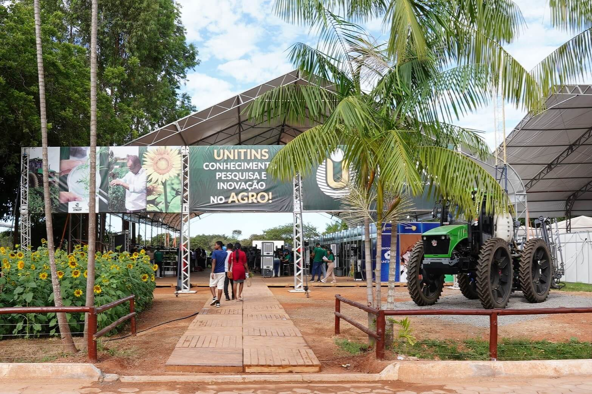
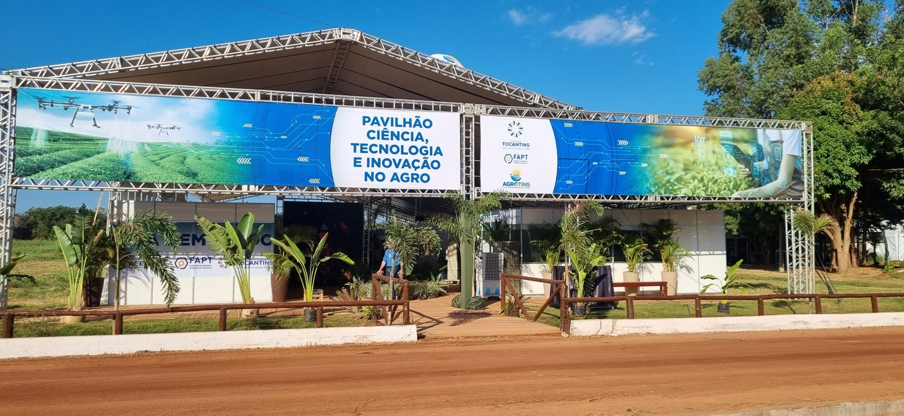

Agrotins 2025: Relatório Interativo
Uma Análise da AgroEvolução no Coração do Brasil
Introdução: A Grandeza da Agrotins 2025
A Agrotins 2025, realizada de 13 a 17 de maio sob o tema central "AgroEvolução" 🌱, reafirmou sua magnitude como a principal feira de tecnologia agropecuária do Norte do Brasil. Sediada no Parque Agrotecnológico Eng. Mauro Medanha em Palmas-TO (com ~700 mil m²), o evento destacou-se por melhorias como um novo Pier e exposições náuticas ⚓. Esta análise compila as observações de uma visita técnica focada em avanços, gestão e o dinamismo do agronegócio tocantinense.
A organização, liderada pelo Governo do Tocantins e diversos parceiros, foi fundamental para o sucesso do evento.
Movimentação Financeira (em Bilhões R$)
A Agrotins 2025 movimentou R$ 5,07 bilhões[3], superando os R$ 4,02 bilhões de 2024.
Destaques da Visita: Inovação e Impacto
A feira foi um palco vibrante para inovações tecnológicas[2], pesquisa científica e iniciativas de impacto social, com instituições de ensino e fomento[8] desempenhando papéis cruciais.
💡 IFTO: Vitrine Tecnológica
Com 16 inovações[6], o IFTO brilhou. Destaques:
- Ixogurte: Iogurte inovador da flor de ixora.[5][7]
- Beephona: Tampa para colmeias que pode aumentar a produção de mel em 50%.[5]
- Cão Robô: Demonstração de tecnologia robótica aplicada ao campo.[5]

Muitos outros projetos relevantes em alimentos e tecnologia foram exibidos.[6]
🔬 Unitins: Avanço Científico
A Unitins demonstrou a força da pesquisa com estudos sobre fungos agrícolas e um laboratório entomológico detalhado. Seu estande recebeu mais de 4 mil visitantes.[4]
Diversos outros estudos importantes para o agro e meio ambiente foram apresentados.
🚀 FAPT & CT&I: Hub de Criatividade
O Pavilhão CT&I, com a FAPT, impulsionou a maratona "FAPTGulhas"[1] e exibiu diversas tecnologias emergentes e startups.
Foco em agricultura de precisão, bioeconomia e energias renováveis.
🧺 Agricultura Familiar: Riqueza Local
O pavilhão destacou a diversidade produtiva e cultural do Tocantins, com artesanatos e produtos de povos tradicionais.
🤝 Agrotins Alimenta: Impacto Social
O projeto arrecadou:
- ~3 mil cestas básicas
- R$ 100 mil em doações
Coordenado pela primeira-dama do estado, Karynne Sotero.
🎯 Focos de Inovação
Áreas de destaque nas inovações apresentadas.
Análise da Gestão do Evento
Uma visão administrativa sobre a Agrotins 2025, abordando logística, marketing e relacionamento com o cliente, identificando pontos fortes e oportunidades de melhoria.
🚚 Organização e Logística
Positivo: Evento bem organizado internamente, variedade alimentar.
Desafios: Congestionamento no acesso, estacionamento lotado, manutenção de sanitários.
📢 Marketing e Comunicação
Estratégias visíveis com outdoors, banners criativos (Engetins) e panfletagem interna.
👥 Relacionamento com Cliente
Atendimento satisfatório, com destaque para clareza dos apresentadores da Unitins e FAPT.
Conclusões e Impacto Estratégico
A Agrotins 2025 transcendeu uma simples feira, revelando-se um ecossistema vibrante de inovação, negócios e conhecimento. Apesar dos desafios logísticos, comuns em eventos de sua magnitude, a feira é um catalisador essencial para o agronegócio, impulsionando o networking e a disseminação de tecnologias. O evento é um estudo de caso valioso em gestão de megaeventos e marketing promocional.
Importância para o Tocantins
A feira é crucial para o desenvolvimento socioeconômico do Tocantins, atraindo investimentos e fomentando a cadeia produtiva. Ela solidifica o estado como um polo chave do agronegócio no Norte do Brasil, mobilizando todos os 139 municípios e gerando impacto econômico expressivo.
Principais Áreas de Impacto da Agrotins
Representação qualitativa das áreas onde a Agrotins gera maior impacto.
Recomendações Estratégicas
Com base nas observações, são propostas sugestões para o contínuo aprimoramento da Agrotins e para os atores do setor agropecuário.
Para Futuras Edições da Agrotins:
- Melhorar planejamento de acesso e estacionamento.
- Aprimorar gestão sanitária (mais unidades, limpeza frequente).
- Otimizar infraestrutura de alimentação.
- Reforçar sinalização interna do parque.
- Expandir uso de ferramentas digitais (apps, mapas interativos).
Para Empresas e Instituições do Setor:
- Manter investimento contínuo em P&D regionalizado.
- Focar na experiência do cliente com atendimento qualificado.
- Utilizar marketing criativo e segmentado.
- Fortalecer parcerias estratégicas (ensino, pesquisa, empresas).
- Dar ênfase à sustentabilidade nas práticas e produtos.
Fontes de Informação
- FOLHA CAPITAL. Fapt marca presença na 25º edição da Agrotins com o Pavilhão de Ciência, Tecnologia e Inovação. Acesso em: 24 mai. 2025.
- TOCANTINS RURAL. Agrotins 2025 impulsiona o agro no Tocantins e destaca 7 empresas que investem em tecnologia. Acesso em: 24 mai. 2025.
- JORNAL DO TOCANTINS. Agrotins 2025: feira movimentou mais de R$ 5 bilhões em negócios e recebeu 192 mil visitantes, diz governo. Acesso em: 24 mai. 2025.
- UNITINS. Estande da Unitins recebe mais de 4 mil visitantes durante Agrotins 2025. Acesso em: 24 mai. 2025.
- G1 TOCANTINS. De cão robô a iogurte de flor: Agrotins apresenta inovação e tecnologias que facilitam a vida no campo. Acesso em: 24 mai. 2025.
- INSTITUTO FEDERAL DO TOCANTINS. Participação do IFTO na Agrotins teve programação diversificada e destaques de projetos. Acesso em: 24 mai. 2025.
- INSTITUTO FEDERAL DO TOCANTINS. IFTO leva ciência, inovação e sabores à Agrotins 2025. Acesso em: 24 mai. 2025.
- CONEXÃO TOCANTINS. Instituições de ensino apresentam na Agrotins como a ciência está transformando o campo no Tocantins. Acesso em: 25 mai. 2025.